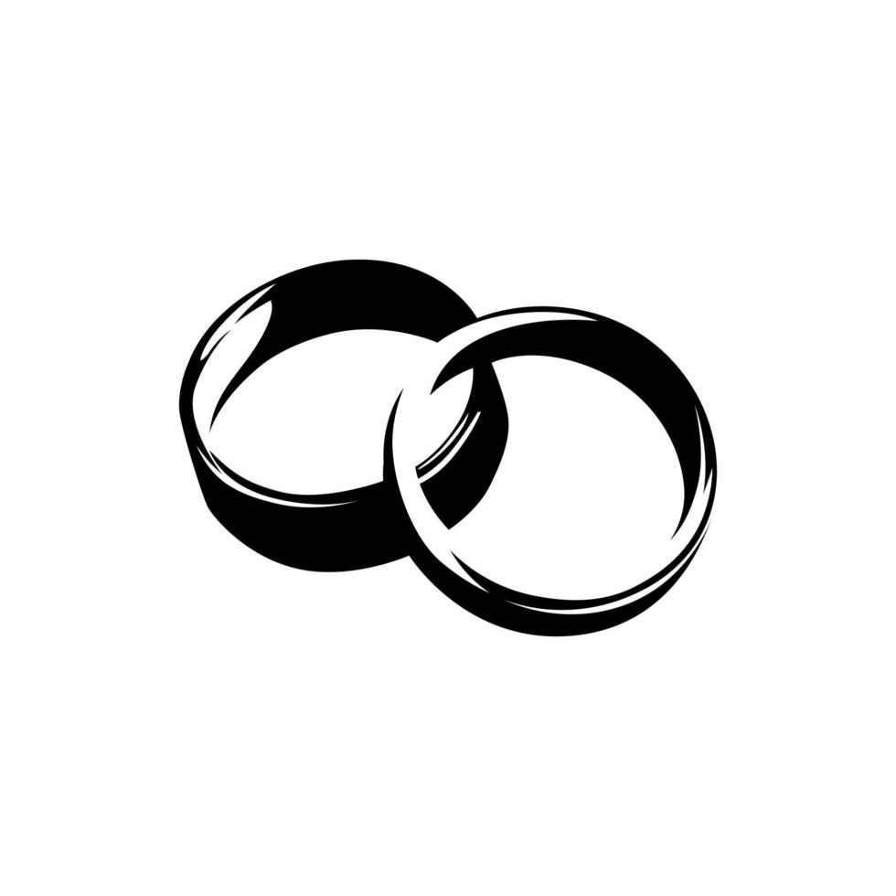

LA BODA DE DIANA LISELOT PERALTA PARRÓN
LA BODA MAS ESPERADA
Nos acompañas a vivir esta gran fiesta

Allí estás, pensando cómo o con qué mensajes de matrimonio agasajar a la pareja. Quieres hacerlo de la mejor manera, unque creas -en ocasiones quizas- que es una tarea difícil. Recuerda que, las dedicatorias de boda para los novios deben estar orientadas a dar una voz de aliento, apoyo y cariño. Comenzarón una nueva etapa y una vida juntos, por ello deben ser deseos sinceros, positivos y que sean frases de la boda o acordes a ella.
El amor que los une es inigualable, siempre yienen muchas cosas que compartir
Confirma tu asistencia